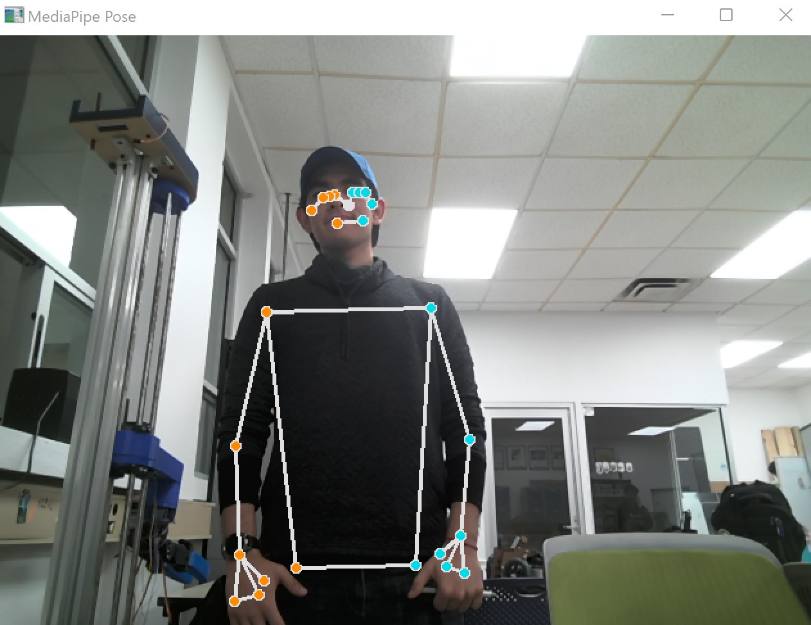
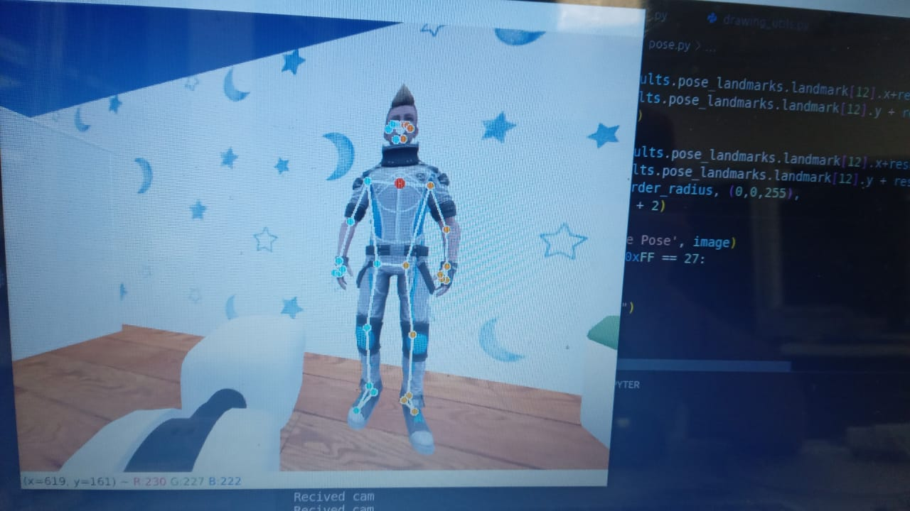

Pose Estimation with MediaPipe
Pose estimation was implemented using MediaPipe for the RoboCup 2022 @Home Simulation competition. The pose estimation algorithm is based on the MediaPipe Pose solution.
It's very simple, acurate and fast. It's also very easy to use, since it's a pre-trained model that can be used directly.
How to use it
First of all, you need to install MediaPipe. You can do it by running the following command:
Then, you can use the following code to get the pose estimation:
import mediapipe as mp
# Calling the pose solution from MediaPipe
mp_pose = mp.solutions.pose
# Opening the image source to be used
image = cv2.imread("image.jpg")
# Calling the pose detection model
with mp_pose.Pose(
min_detection_confidence=0.5,
min_tracking_confidence=0.5) as pose:
# Detecting the pose with the image
poseResult = pose.process(image)
As a result, you'll have a poseResult array of points. That each point represent a joint of the body, as shown in the following image:

Using pose estimation with webcam
You can also use pose estimation with a webcam to get streamed video. You can use the following code to do it:
import mediapipe as mp
import cv2
# Calling the pose solution from MediaPipe
mp_pose = mp.solutions.pose
# Calling the solution for image drawing from MediaPipe
mp_drawing = mp.solutions.drawing_utils
mp_drawing_styles = mp.solutions.drawing_styles
# Opening the webcam
cap = cv2.VideoCapture(0)
# Calling the pose detection model
with mp_pose.Pose(
min_detection_confidence=0.5,
min_tracking_confidence=0.5) as pose:
# Looping through the webcam frames
while cap.isOpened():
# Reading the webcam frame
success, image = cap.read()
if success:
# Managing the webcam frame
image.flags.writeable = False
image = cv2.cvtColor(image, cv2.COLOR_BGR2RGB)
# Detecting the pose with the image
results = pose.process(image)
# Drawing the pose detection results
image.flags.writeable = True
image = cv2.cvtColor(image, cv2.COLOR_RGB2BGR)
mp_drawing.draw_landmarks(
image,
results.pose_landmarks,
mp_pose.POSE_CONNECTIONS,
landmark_drawing_spec=mp_drawing_styles.get_default_pose_landmarks_style())
cv2.imshow('MediaPipe Pose', cv2.flip(image, 1))
if cv2.waitKey(5) & 0xFF == 27:
break
cap.release()
As a result, you'll not only be able to get the pose estimation array. but also the stream with the drawing of the pose estimation.
Example:

Using pose estimation with ROS
You can receive the image source from a ROS topic. You can use the following code to do it:
import mediapipe as mp
from time import sleep
from typing import Tuple
import cv2
import numpy as np
import rospy
from cv_bridge import CvBridge
from sensor_msgs.msg import Image
# Calling the pose solution from MediaPipe
mp_pose = mp.solutions.pose
# Calling the solution for image drawing from MediaPipe
mp_drawing = mp.solutions.drawing_utils
mp_drawing_styles = mp.solutions.drawing_styles
# Declaring the CvBridge for image conversion from ROS to OpenCV
bridge = CvBridge()
# Declaring the image and its callback for the ROS topic
imageReceved = None
def image_callback(data):
global imageReceved
imageReceved = data
# Initializing the ROS node
rospy.init_node('ImageRecever', anonymous=True)
# Subscribing to the ROS topic
imageSub = rospy.Subscriber(
"/hsrb/head_center_camera/image_raw", Image, image_callback)
# Calling the pose detection model
with mp_pose.Pose(
min_detection_confidence=0.5,
min_tracking_confidence=0.5) as pose:
# Looping through the image frames
while not rospy.is_shutdown():
if imageReceved is not None:
# Converting the ROS image to OpenCV
image = bridge.imgmsg_to_cv2(imageReceved, "rgb8")
# Detecting the pose with the image
image.flags.writeable = False
results = pose.process(image)
# Drawing the pose detection results
image.flags.writeable = True
image = cv2.cvtColor(image, cv2.COLOR_RGB2BGR)
mp_drawing.draw_landmarks(
image,
results.pose_landmarks,
mp_pose.POSE_CONNECTIONS,
landmark_drawing_spec=mp_drawing_styles.get_default_pose_landmarks_style())
cv2.imshow('MediaPipe Pose', image)
if cv2.waitKey(5) & 0xFF == 27:
break
else:
print("Image not recived")
sleep(1)
Here is an example of the result:
